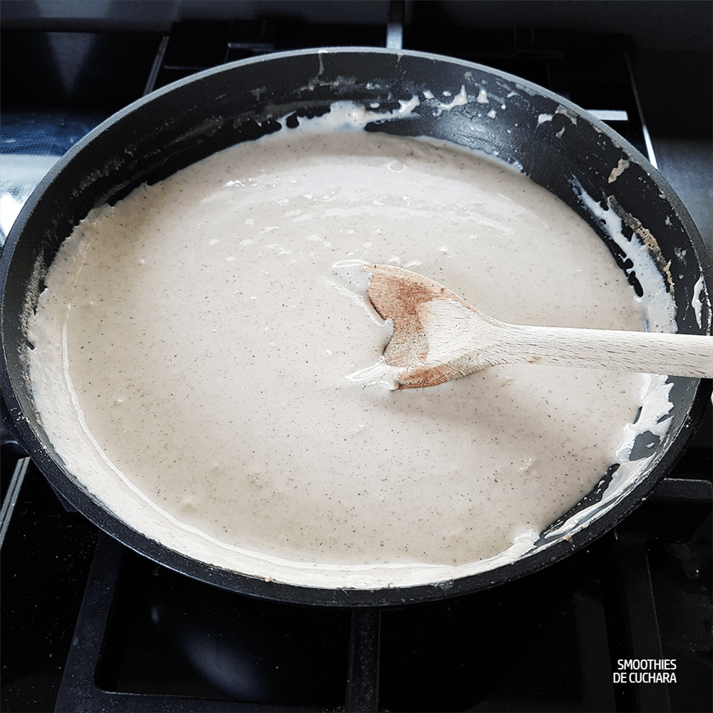
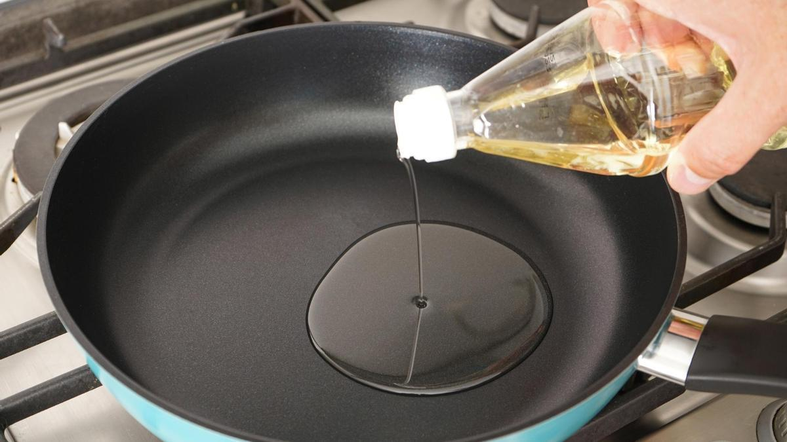
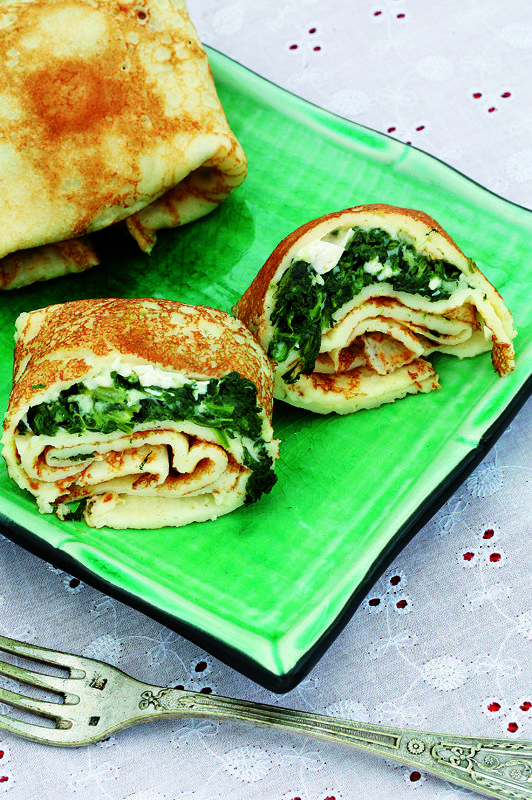

Volver al menu
Crêpes de pollo y espinacas
Ingredientes
- 100 g de pechuga de pollo
- 200 g de espinacas congeladas
- 300 g de harina
- 1 nuez de mantequilla
- 7 dl de leche
- 4 huevos
- 50 g de queso parmesano
- 1 ajo
- Sal y pimienta
Paso a paso
- Poner una sartén al fuego con la mantequilla y una cucharada de harina. Ir añadiendo leche, mientras removemos, hasta conseguir una bechamel espesa. Salpimentar. Hacer las pechugas a la plancha y picar en trozos. Reservar.

- Poner otra sartén con aceite y un ajo pelado y picado. Añadir espinacas descongeladas y rehogar. Mezclar la bechamel con las espinacas, el pollo y el queso parmesano.

- Poner en el vaso de la batidora 1/2 de leche, los huevos y la sal. Añadir, poco a poco, 250 g de harina hasta obtener una masa homogénea; reposar.

- Hacer con la masa los crêpes en una sartén con un poco de aceite. Rellenar con la mezcla de pollo y espinacas y doblar en 4 como si fuera un pañuelo.

Resultado Final

Volver a inicio